Tutorial of Hierarchical Stepper
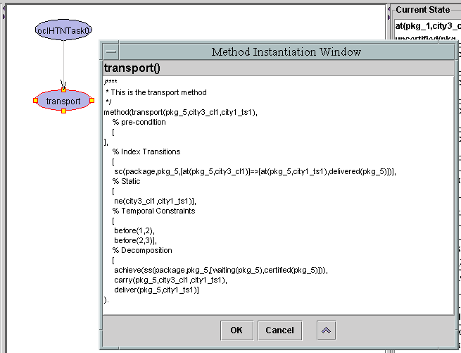
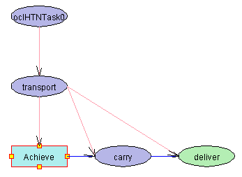


- Select task
Select oclHTNTask1 from the combo box.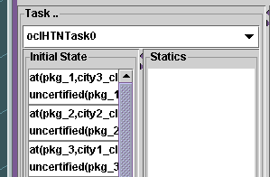
- Stepping
Start stepping by pressing button "Next" on the toolbox at the bottom of the window or select menu item "Next" from the menu. A Method Instantiation Window will appear. As all variables have already been instantiated, so choose ok to continue.
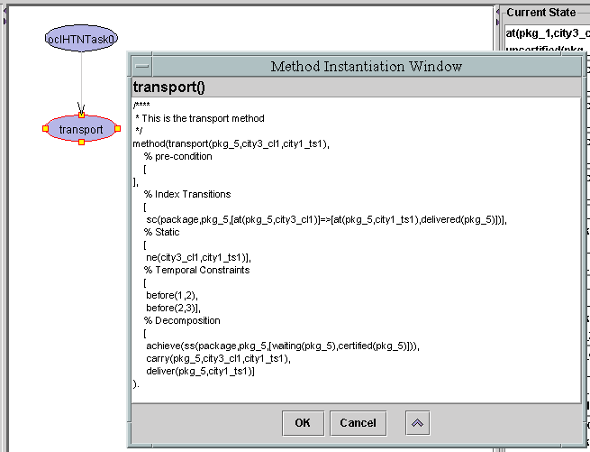
- Developed graph
The graph on the canvas will develop as showed at the following picture. Method transport is instantiated and decomposed containing 3 parts. The highlighted box "Achieve" indicates that currently the state waiting(pkg_5) certified(pkg_5) is required to be achieved.
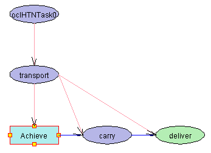
- Automatic popup window
A Stepper Instantiation Window is actived automaticaly for the user to choose a suitable method/operator to achieve the required state. The current state is listed.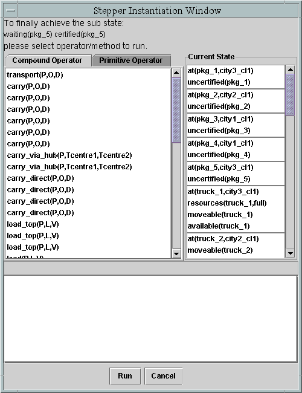
- Choosing operator and instantiate it.
Choose the Primitive Operator tab, then click pay_fees_normal(P). Its content will be displayed. Mouse right click on the variable P, a pull popup menu will appear with all possible objects ready for the user to choose. Select pkg_5. Operator pay_fees_normal will be instantiated. Click button "Run".
- Developed graph
As a result of running operator pay_fees_normal the current state window is updated and the graphs is as following picture shows.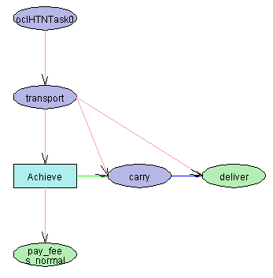
GIPO then moves on the next step. All possible method with the name of "carry" will be collected and popup in the Method Instantiation Window. Method descriptions can be accessed by mouse right click on the method in the list. Click the first method carry, then choose "OK" button to continue.
- Final graph
Follow the previous procedure, always instantiate all the required variables before choose "OK" or "Run" to proceed.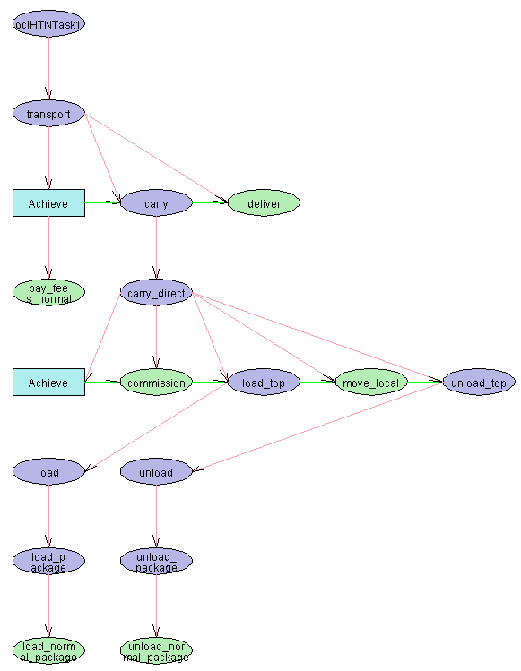
Finally when operator deliver is executed successfully, a message box should appear to inform the user the goal state has been reached.
The final graph should be as the following picture.
- Presenting data
Mouse right click a shape, a popup menu will appear. Select "Property" to view the content of the current selected method/operator/chieve.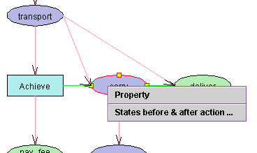
Select "States before & after action ..." to view states, a States Window will show. Objects and its states can be highlighted by select the row.
- Print graphical result
The result graph can be print previewed and printed.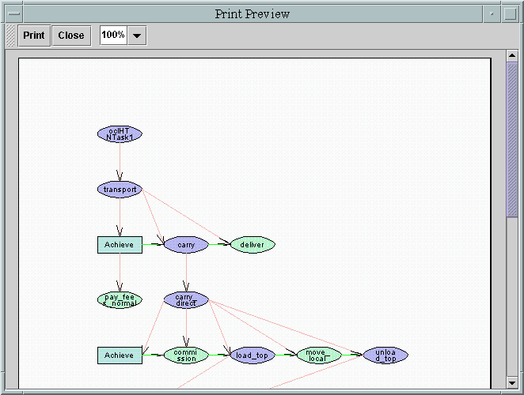
- View/print action sesquence
The action sequence can be displayed or printed.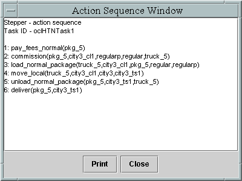
- Other import functions
- Undo function is available by choosing "Pre" button.
- Stepping can be saved in a seperate file
"*.vm", and can be reloaded afterwards with information of steppings and
graphics.
 back to the tutorial main page
back to the tutorial main page